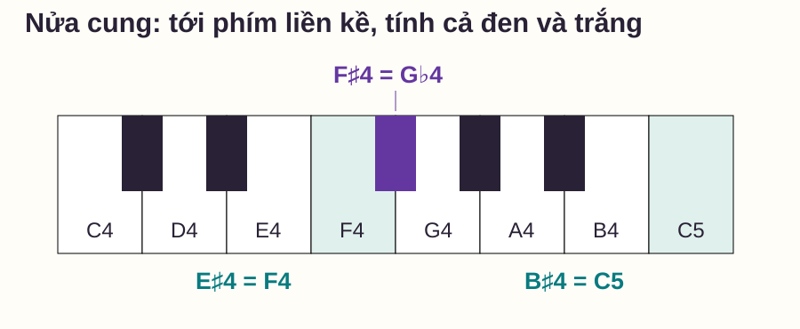
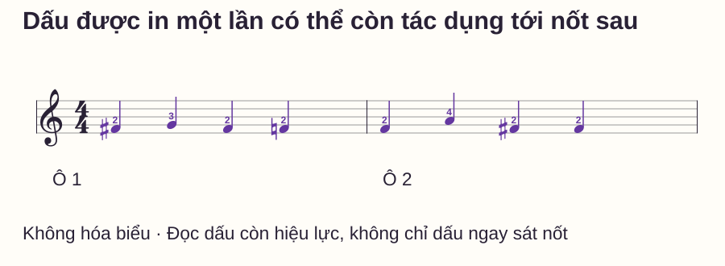
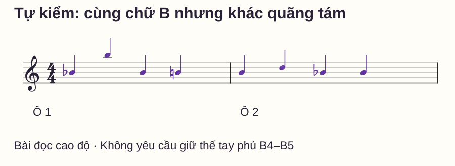

Đọc nhạc
Dấu thăng, giáng, bình trên sheet piano: hiệu lực đến đâu?
# Dấu thăng, giáng, bình trên sheet piano: hiệu lực đến đâu?
Bạn thấy dấu thăng trước một nốt Fa rồi chơi đúng phím đen. Vài nốt sau vẫn là Fa nhưng không có dấu, bạn trở lại phím trắng và thấy câu nhạc khác dự kiến. Vấn đề không nằm ở tên nốt: bạn chưa theo dõi dấu hóa còn hiệu lực hay đã hết.
Bài này tách ba việc: dấu yêu cầu đổi cao độ thế nào, nó áp dụng ở vị trí nào và khi nào trở về cách đọc ban đầu. Các sheet dưới đều không có hóa biểu, không có nốt nối qua vạch nhịp và chỉ dùng một bè khóa Sol để học từng quy tắc rõ ràng.
Trả lời nhanh
Dấu thăng nâng nốt tự nhiên nửa cung; dấu giáng hạ nửa cung; dấu bình đưa nốt về cao độ tự nhiên. Với ký âm thông dụng trong các mẫu này, dấu hóa bất thường áp dụng từ chỗ xuất hiện tới hết ô nhịp cho cùng tên nốt và cùng quãng tám, trừ khi được thay bằng dấu khác. Qua vạch nhịp, đọc lại theo hóa biểu; vì các mẫu không có hóa biểu nên trở về nốt tự nhiên. Không tự áp dấu ở F4 sang F5. Hãy đọc đủ tên, quãng tám và dấu đang có hiệu lực trước khi chọn phím, thay vì chỉ tìm ký hiệu ngay sát từng đầu nốt.
Ba ký hiệu không có nghĩa là ba kiểu phím
Khoảng nửa cung trên piano là khoảng tới phím liền kề, tính cả phím đen và trắng. Theo Steps to Music Theory — Accidentals and Beats, dấu hóa có thể nâng, hạ hoặc khôi phục nốt; E–F và B–C là những cặp phím trắng cách nhau nửa cung.
| Ký hiệu | Đọc | Ví dụ chọn phím |
|---|---|---|
| ♯ | Thăng: cao hơn nốt tự nhiên nửa cung | F♯4 là phím đen ngay bên phải F4 |
| ♭ | Giáng: thấp hơn nốt tự nhiên nửa cung | G♭4 là phím đen ngay bên trái G4 |
| ♮ | Bình: trở về nốt tự nhiên | F♮4 là F4, không phải F♯4 |
F♯4 và G♭4 cùng phím trên piano thông thường, nhưng tên viết khác nhau. Đừng thay tên trên sheet chỉ vì thấy hai cách gọi trùng phím. Quan hệ với nốt khác và cách phân tích bản nhạc vẫn có thể khác.

Trong bài, “nốt tự nhiên” chỉ nốt không thăng/giáng, như F hoặc B. Một dấu ♮ không phải lệnh hạ mọi nốt nửa cung: với F♯ nó hạ về F, nhưng với B♭ nó nâng về B. Luôn xác định điểm đích theo tên nốt.
Phân biệt hóa biểu với dấu ngay trước nốt
Hóa biểu nằm sau khóa nhạc và quy định các tên nốt bị thăng/giáng trong phạm vi áp dụng, qua các ô cho tới khi có thay đổi. Dấu hóa bất thường đặt trước một nốt là thay đổi cục bộ. Bài tập này chỉ minh họa thay đổi cục bộ trên nền không có hóa biểu.
Điều đó làm câu “qua vạch là về phím trắng” đúng trong mẫu, nhưng không phải quy tắc chung. Nếu hóa biểu có F♯, một F♮ cục bộ hết hiệu lực sau vạch và F tiếp theo lại đọc theo F♯ của hóa biểu, trừ chỉ dẫn khác. Chưa cần chơi ví dụ có hóa biểu ấy; chỉ cần giữ đúng nguyên tắc trở về nền của bản nhạc.
Sheet 1: một dấu thăng có thể tác động tới nốt sau

Đặt phải quanh E4–A4, dùng ngón 2 cho các Fa, ngón 3 cho Sol và 4 cho La. Được nhấc và đặt ngón 2 giữa F♯4/F4; không phải giữ cả hai phím. Ngón là gợi ý cho mẫu đọc chậm này.
| Điểm đọc | Phím phải chơi | Lý do |
|---|---|---|
| Ô 1, phách 1 | F♯4 | Có dấu thăng ngay trước F4 |
| Ô 1, phách 3 | F♯4 | Cùng F4 trong ô, chưa có dấu thay |
| Ô 1, phách 4 | F4 | Dấu bình khôi phục F tự nhiên |
| Ô 2, phách 1 | F4 | Ô mới, nền không hóa biểu |
| Ô 2, phách 3 và 4 | F♯4, F♯4 | Dấu thăng ở phách 3 còn tác dụng tới phách 4 |
OpenLearn — The natural sign giải thích dấu bình hủy dấu thăng/giáng trước đó và hiệu lực cục bộ tới vạch ô. Các nốt và thứ tự ở đây được viết riêng để bạn kiểm cùng một F4 ở nhiều thời điểm.
Cách đọc từng ô mà không bỏ sót dấu
Trước khi chơi, đọc khóa, hóa biểu và tên nốt kèm quãng tám. Ở đầu ô 1, trạng thái F4 là tự nhiên; khi gặp ♯ ở phách 1, đổi thành F♯4. G4 ở phách 2 không làm dấu thăng của F4 hết hiệu lực. Tới ♮ ở phách 4, F4 trở về tự nhiên.
Qua vạch, bắt đầu lại từ nền không hóa biểu. Đọc ô 2 thành F4–A4–F♯4–F♯4. Sau khi đã gọi đúng phím, gõ bốn phách và chơi với cùng độ dài mỗi nốt. Không để thời gian nghĩ dấu hóa biến thành khoảng nghỉ chen thêm.
Nếu còn nhầm, tách hai lượt: một lượt chỉ xác định cao độ, một lượt thực hiện nhịp khi cao độ đã rõ. Không gọi lượt đã đọc và sửa nhiều lần là một phép thị tấu mới.
Sheet 2: đổi quãng tám có mang dấu theo không?
Mẫu sau dùng Si ở hai quãng tám để kiểm phạm vi dấu. Đây là bài đọc, không yêu cầu giữ một thế tay phủ B4–B5. Nếu muốn chơi, tìm riêng từng đích, cho phép chuyển tay và nhìn bàn phím; không cố giãn giữ cả quãng tám.

Đáp án tám nốt và cách giải thích
Ô 1: B♭4 – B5 – B♭4 – B4. Ô 2: B4 – D5 – B♭4 – B♭4. B5 tự nhiên vì khác quãng tám. B4 thứ ba trong ô 1 vẫn giáng vì không có dấu hủy; B4 cuối có dấu bình. Ô 2 bắt đầu lại từ nền tự nhiên; dấu giáng ở phách 3 áp dụng tiếp tới B4 phách 4.
Với một số bản in, dấu nhắc có thể được thêm lại để tránh hiểu nhầm; âm nhạc đặc biệt có thể nêu quy ước riêng. Các mẫu ở đây dùng ký âm thông dụng và ghi rõ không có nốt nối. Trường hợp nốt nối qua vạch cần học riêng; không cắt nốt nối để “đặt lại” cao độ ở giữa âm đang ngân.
Những lỗi thường gặp
| Lỗi | Nguyên nhân cần kiểm | Cách thử sửa |
|---|---|---|
| Fa thứ hai lại chơi phím trắng | Chỉ tìm dấu sát từng nốt | Ghi trạng thái F4 ở từng phách, rồi đọc lại không ghi |
| Si quãng trên cũng bị giáng | Chỉ nhớ tên chữ, bỏ quãng tám | Gọi B4/B5 đầy đủ trước khi áp dấu |
| Ô sau vẫn giữ dấu cũ | Không kiểm vạch và hóa biểu | Nói “ô mới, nền nào?” rồi gọi nốt đầu |
| Dấu bình luôn được hiểu là hạ | Không xét cao độ đích | So F♯→F với B♭→B trên bàn phím |
| Mọi dấu thăng đều tìm phím đen | Bỏ các cặp trắng nửa cung | Chỉ trực tiếp E–F và B–C |
Routine mười phút và tự kiểm
- 0–2 phút: chỉ các phím F, F♯/G♭, E/F và B/C trên hình hoặc đàn.
- 2–4 phút: đọc ô 1 của sheet 1, giải thích hai lần F không có dấu giống/khác nhau ra sao.
- 4–6 phút: chơi hai ô sheet 1 với bốn phách đều mỗi ô.
- 6–8 phút: đọc sheet 2 trước đáp án, ghi đủ quãng tám.
- 8–10 phút: đối chiếu, sửa một lỗi và đọc lại từ đầu ô 2.
Chỉ mở rộng khi bạn giải thích được vì sao ô 1 phách 3 của sheet 1 là F♯4, nhưng ô 2 phách 1 lại là F4; đồng thời đọc đúng B5 ở sheet 2. Nhớ hai chuỗi đáp án chưa chứng minh áp dụng được quy tắc cho một sheet mới.
Đọc thêm
Cách đọc nốt nhạc piano ôn khóa, nhịp và vùng âm. Nhận biết phím đàn hỗ trợ tìm phím. Nốt mốc giúp phân biệt các vị trí cùng tên khác quãng tám.
Câu hỏi thường gặp
Dấu hóa đứng trước hay sau đầu nốt?
Trên sheet, dấu đứng trước đầu nốt. Khi gọi tên hoặc viết chữ, ta thường đọc “Fa thăng” và viết F♯; đừng để khác biệt vị trí chữ làm bỏ dấu trên khuông.
Không thấy dấu ở nốt sau thì có chơi tự nhiên không?
Chưa chắc. Cần kiểm hóa biểu và dấu còn hiệu lực trong ô cho cùng tên, cùng quãng tám. Sheet 1 có nhiều Fa không in lại dấu nhưng vẫn là F♯4.
Qua vạch nhịp có luôn trở về phím trắng không?
Không. Trở về quy định của hóa biểu. Chỉ vì các bài tập không có hóa biểu nên nốt mới ở ô sau đọc tự nhiên nếu không có dấu mới.
Dấu bình có áp dụng tới hết ô không?
Có, trong phạm vi cùng tên và quãng tám của mẫu, trừ khi một dấu khác thay nó. Không coi dấu bình chỉ tác động một tiếng rồi dấu trước tự quay lại.
F♯ và G♭ cùng phím thì có thể viết thay nhau không?
Không tự thay cách viết khi đọc sheet. Chúng có thể cùng phím trên piano nhưng là hai cách ghi và quan hệ âm nhạc khác nhau.
Dấu của nốt nối qua vạch có bị cắt giữa tiếng không?
Không đổi cao độ giữa âm đang được nối. Bài này không dùng dấu nối; cần xét riêng nốt nối và nốt được đánh mới sau đó theo bản nhạc cụ thể.
Nguồn và ghi chú biên soạn
- OpenLearn — The natural sign: dấu bình và hiệu lực dấu hóa trong ô.
- Steps to Music Theory — The Basics II: nửa cung, dấu hóa và phạm vi quãng tám. Kiểm ngày 27/10/2026.
- Sheet, hình, thứ tự bài và câu tự kiểm tự biên soạn. Chưa có giáo viên độc lập review hoặc thử nghiệm học viên; phạm vi chưa bao gồm đọc hóa biểu phức tạp hay quy ước ký âm đặc biệt.